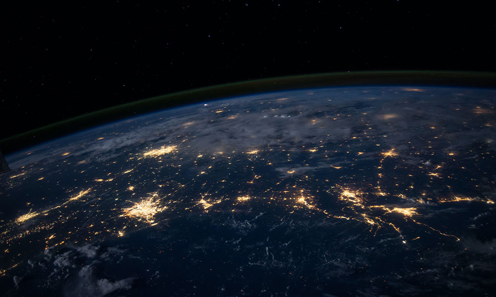

I don't want a perfect life, I want a happy lifr.
완벽한 인생을 원하지 않고 행복한 삶을 원합니다.
I don't want a perfect life, I want a happy lifr.
완벽한 인생을 원하지 않고 행복한 삶을 원합니다.
마우스 이펙트 - 마우스 방향에 따라 움직이기2
<main>
<div class="cursor"></div>
<div class="moveWrap">
<article class="moveImage">
<div class="mImg">
<img src="../assets/img/bg13.jpg" alt="이미지">
</div>
<div class="mText">
<p>No sweat, No sweet.</p>
<p>땀 없인 달콤함도 없다.</p>
</div>
</article>
</div>
</main>
<!-- //contents -->
<!-- info -->
<div class="info">
<h1><a href="index.html">Mouse Effect05 - jquery</a></h1>
<p>마우스 이펙트 - 마우스 방향에 따라 움직이기2</p>
</div>
<div class="info right">
<ul>
<li><a href="javascriptME01.html">1</a></li>
<li><a href="javascriptME02.html">2</a></li>
<li><a href="javascriptME03.html">3</a></li>
<li><a href="javascriptME04.html">4</a></li>
<li><a href="javascriptME05.html">5</a></li>
<li><a href="javascriptME06.html">6</a></li>
<li><a href="javascriptME07.html">7</a></li>
<li><a href="javascriptME08.html">8</a></li>
</ul>
<ul>
<li><a href="jqueryME01.html">1</a></li>
<li><a href="jqueryME02.html">2</a></li>
<li><a href="jqueryME03.html">3</a></li>
<li><a href="jqueryME04.html">4</a></li>
<li class="active"><a href="jqueryME05.html">5</a></li>
<li><a href="jqueryME06.html">6</a></li>
<li><a href="jqueryME07.html">7</a></li>
<li><a href="jqueryME08.html">8</a></li>
</ul>
</div>
<div class="info left list">
<ul>
<li>pageX : <span class="pageX">0</span></li>
<li>pageY : <span class="pageY">0</span></li>
<li>standardX : <span class="standardX">0</span></li>
<li>standardY : <span class="standardY">0</span></li>
</ul>
</div>
.moveWrap {
display: flex;
align-items: center;
justify-content: center;
width: 100%;
height: 100vh;
}
.moveImage {
position: relative;
}
.moveImage .mImg {
width: 50vw;
height: 60vh;
overflow: hidden;
position: relative;
transition: transform 500ms cubic-bezier(0.25, 0.46, 0.45, 0.84);
}
.moveImage:hover .mImg {
transform: scale(1.025);
}
.moveImage .mImg img {
position: absolute;
left: -5%; top: -5%;
width: 110%;
height: 110%;
object-fit: cover;
/* 백그라운드 커버랑 동일한 효과 -> img 태그에 못쓰던걸 사용 할 수 있음 */
transition: transform 500ms cubic-bezier(0.25, 0.46, 0.45, 0.84);
}
.moveImage .mText {
font-family: 'NEXONLv1Gothic';
position: absolute;
left: 50%; top: 50%;
transform: translate(-50%, -50%);
text-align: center;
font-size: 1.3vw;
line-height: 1.6;
white-space: nowrap;
color: #fff;
background: rgba(0,0,0,.4);
padding: 1vw;
}
.cursor {
position: absolute;
width: 20px;
height: 20px;
background: #fff;
border-radius: 50%;
z-index: 10000;
user-select: none;
pointer-events: none;
}
function mouseMove(e){
// 마우스 값
let pageX = e.pageX;
let pageY = e.pageY;
// 커서
gsap.to(".cursor", {duration: .3, left: pageX - 10, top: pageY - 10});
// 기준점 가운데로 변경
let standardX = window.innerWidth/2 - pageX;
let standardY = window.innerHeight/2 - pageY;
// 이미지 x축 -> 마우스 값/20, y축 -> 마우스 값/20
const move = document.querySelector(".mImg img");
move.style.transform = "translate(" + standardX/20 + "px," + standardY/20 + "px)";
// 출력
document.querySelector(".pageX").textContent = parseInt(pageX) + "px";
document.querySelector(".pageY").textContent = parseInt(pageY) + "px";
document.querySelector(".standardX").textContent = parseInt(standardX) + "px";
document.querySelector(".standardY").textContent = parseInt(standardY) + "px";
}
document.addEventListener("mousemove", mouseMove);
// 소스보기 실행함수
modal();